set.seed(1)
x <- matrix(rnorm(20 * 2), ncol = 2)
y <- c(rep(-1, 10), rep(1, 10))
x[y == 1,] <- x[y == 1,] + 1
plot(x, col = (3 - y))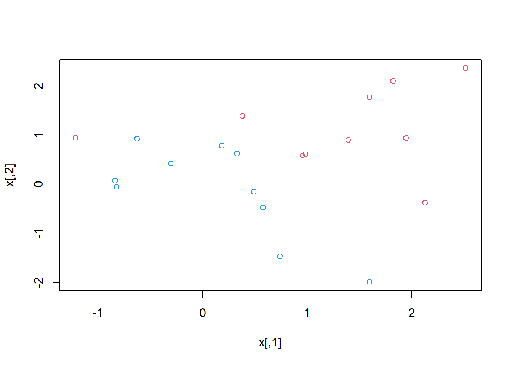
| Tipo | |
|---|---|
| Slides: | https://hastie.su.domains/ISLR2/Slides/Ch9_Support_Vector_Machines.pdf |
| Lab-html: | https://hastie.su.domains/ISLR2/Labs/Rmarkdown_Notebooks/Ch8-baggboost-lab.html |
| Lab-Rscript: | https://hastie.su.domains/ISLR2/Labs/R_Labs/Ch9-svm-lab.R |
| Data: | – |
Usamos el paquete e1071 para ilustrar el clasificador de vector soporte y el SVM (Support Vector Machines, Máquinas de vector soporte). Otra opción es el paquete LiblineaR, que es útil para problemas lineales muy grandes.
El paquete e1071 contiene implementaciones para varios métodos de aprendizaje estadístico. En particular, la función svm() permite ajustar un clasificador de vectores soporte cuando se usa el argumento kernel = "linear". Esta función usa una formulación ligeramente diferente de (9.14) y (9.25) para el clasificador de vectores soporte. El argumento cost nos permite especificar el coste de un incumplimiento del margen. Cuando el argumento cost es pequeño, el margen será amplio y muchos vectores soporte estarán en el margen o lo incumplirán. Cuando es grande, el margen será estrecho y habrá pocos vectores soporte en el margen o que lo incumplan.
Nota Víctor: La siguiente imagen de las slides puede ayudar a entender el concepto de coste de incumplimento del margen.
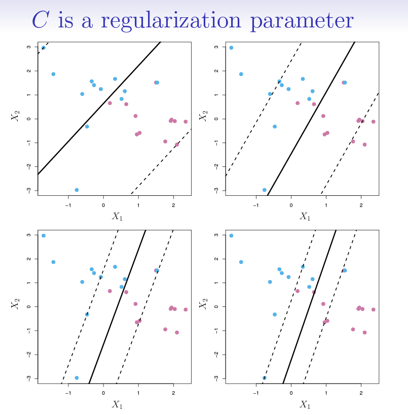
Usamos la función svm() para ajustar el clasificador de vectores soporte para un valor dado del parámetro cost. Aquí demostramos el uso de esta función en un ejemplo bidimensional para que podamos dibujar el límite de decisión resultante. Comenzamos generando las observaciones, que pertenecen a dos clases, y comprobando si las clases son linealmente separables.
set.seed(1)
x <- matrix(rnorm(20 * 2), ncol = 2)
y <- c(rep(-1, 10), rep(1, 10))
x[y == 1,] <- x[y == 1,] + 1
plot(x, col = (3 - y))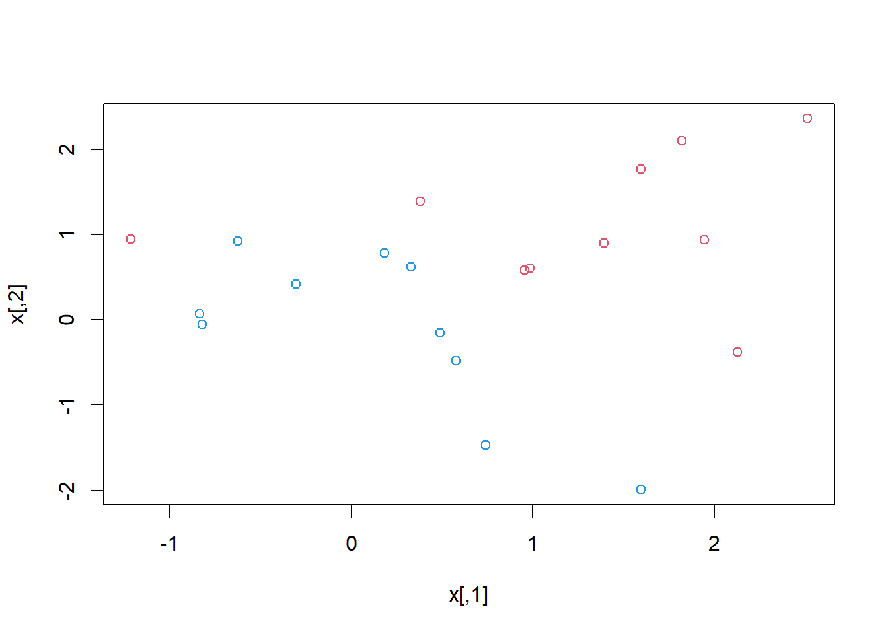
No lo son. A continuación, ajustamos el clasificador de vectores soporte. Para que la función svm() realice la clasificación (a diferencia de la regresión basada en SVM), debemos codificar la respuesta como una variable factor. Ahora creamos un data.frame con la respuesta codificada como un factor.
dat <- data.frame(x = x, y = as.factor(y))
library(e1071)
svmfit <- svm(
y ~ .,
data = dat,
kernel = "linear",
cost = 10,
scale = FALSE
)El argumento scale = FALSE le dice a la función svm() que no escale cada característica (para que tenga media cero y desviación estándar uno, véase el anexo Herramientas); dependiendo de la aplicación, podría preferirse scale = TRUE.
Ahora podemos dibujar el clasificador de vectores soporte obtenido:
plot(svmfit, dat)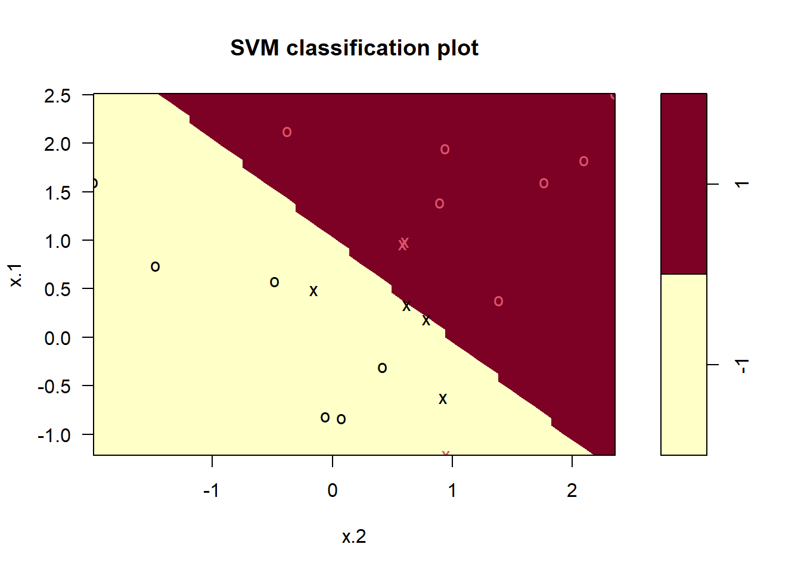
La región del espacio de características que se asignará a la clase -1 se muestra en amarillo claro y la región que se asignará a la clase +1 se muestra en rojo. El límite de decisión entre las dos clases es lineal (porque usamos el argumento kernel = "linear"), aunque debido a la forma en que se implementa la función plot() en este paquete, el límite de decisión parece algo irregular en el gráfico.
Detalle técnico: Tenga en cuenta que aquí la segunda característica se dibuja en el eje \(x\) y la primera característica se dibuja en el eje \(y\), en contraste con el comportamiento de la función habitual plot() en R.
Los vectores soporte se dibujan como cruces y las observaciones restantes se dibujan como círculos; vemos aquí que hay siete vectores soporte. Podemos determinar sus identidades de la siguiente manera:
svmfit$index[1] 1 2 5 7 14 16 17Podemos obtener información básica sobre el ajuste del clasificador de vectores soporte usando la función summary():
summary(svmfit)
Call:
svm(formula = y ~ ., data = dat, kernel = "linear", cost = 10, scale = FALSE)
Parameters:
SVM-Type: C-classification
SVM-Kernel: linear
cost: 10
Number of Support Vectors: 7
( 4 3 )
Number of Classes: 2
Levels:
-1 1Esto nos dice, por ejemplo, que se usó un kernel lineal con cost = 10, y que había 7 vectores soporte, 4 en una clase y 3 en la otra.
¿Qué pasa si usamos un valor más pequeño del parámetro de coste?
svmfit <- svm(
y ~ .,
data = dat,
kernel = "linear",
cost = 0.1,
scale = FALSE
)
plot(svmfit, dat)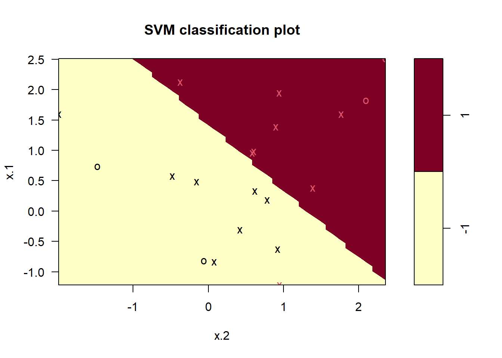
svmfit$index [1] 1 2 3 4 5 7 9 10 12 13 14 15 16 17 18 20Ahora que se está utilizando un valor más pequeño del parámetro de coste, obtenemos una mayor cantidad de vectores soporte, porque el margen ahora es más amplio. Desafortunadamente, la función svm() no muestra explícitamente los coeficientes del límite de decisión lineal obtenido cuando se ajusta el clasificador de vectores soporte, ni muestra el ancho del margen.
El paquete e1071 incluye una función integrada, tune(), para realizar una validación cruzada. Por defecto, tune() realiza una validación cruzada 10-fold en un conjunto de modelos de interés. Para usar esta función, pasamos información relevante sobre el conjunto de modelos que se están considerando. La siguiente expresión indica que queremos comparar SVM con un kernel lineal, usando un rango de valores del parámetro cost.
set.seed(1)
tune.out <- tune(svm,
y ~ .,
data = dat,
kernel = "linear",
ranges = list(cost = c(0.001, 0.01, 0.1, 1, 5, 10, 100)))Podemos acceder fácilmente a los errores de validación cruzada para cada uno de estos modelos usando la función summary():
summary(tune.out)
Parameter tuning of 'svm':
- sampling method: 10-fold cross validation
- best parameters:
cost
0.1
- best performance: 0.05
- Detailed performance results:
cost error dispersion
1 1e-03 0.55 0.4377975
2 1e-02 0.55 0.4377975
3 1e-01 0.05 0.1581139
4 1e+00 0.15 0.2415229
5 5e+00 0.15 0.2415229
6 1e+01 0.15 0.2415229
7 1e+02 0.15 0.2415229Vemos que cost = 0.1 da como resultado la tasa de error de validación cruzada más baja. La función tune() almacena el mejor modelo obtenido, al que se puede acceder de la siguiente manera:
bestmod <- tune.out$best.model
summary(bestmod)
Call:
best.tune(METHOD = svm, train.x = y ~ ., data = dat, ranges = list(cost = c(0.001,
0.01, 0.1, 1, 5, 10, 100)), kernel = "linear")
Parameters:
SVM-Type: C-classification
SVM-Kernel: linear
cost: 0.1
Number of Support Vectors: 16
( 8 8 )
Number of Classes: 2
Levels:
-1 1La función predict() se puede utilizar para predecir la etiqueta de clase en un conjunto de observaciones de prueba, en cualquier valor dado del parámetro de coste. Empezamos generando un conjunto de datos de prueba.
xtest <- matrix(rnorm(20 * 2), ncol = 2)
ytest <- sample(c(-1, 1), 20, rep = TRUE)
xtest[ytest == 1,] <- xtest[ytest == 1,] + 1
testdat <- data.frame(x = xtest, y = as.factor(ytest))Ahora predecimos las etiquetas de clase de estas observaciones de prueba. Aquí usamos el mejor modelo obtenido a través de la validación cruzada para hacer predicciones.
ypred <- predict(bestmod, testdat)
table(predict = ypred, truth = testdat$y) truth
predict -1 1
-1 9 1
1 2 8Así, con este valor de cost, 17 de las observaciones de prueba se clasifican correctamente. ¿Qué pasaría si hubiéramos usado cost = 0.01?
svmfit <- svm(
y ~ .,
data = dat,
kernel = "linear",
cost = .01,
scale = FALSE
)
ypred <- predict(svmfit, testdat)
table(predict = ypred, truth = testdat$y) truth
predict -1 1
-1 11 6
1 0 3En este caso, 3 observaciones adicionales están mal clasificadas.
Ahora considere una situación en la que las dos clases son linealmente separables. Entonces podemos encontrar un hiperplano separador usando la función svm(). Primero separamos aún más las dos clases en nuestros datos simulados para que sean linealmente separables:
x[y == 1,] <- x[y == 1,] + 0.5
plot(x[,2], x[,1], col = (y + 5) / 2, pch = 19) 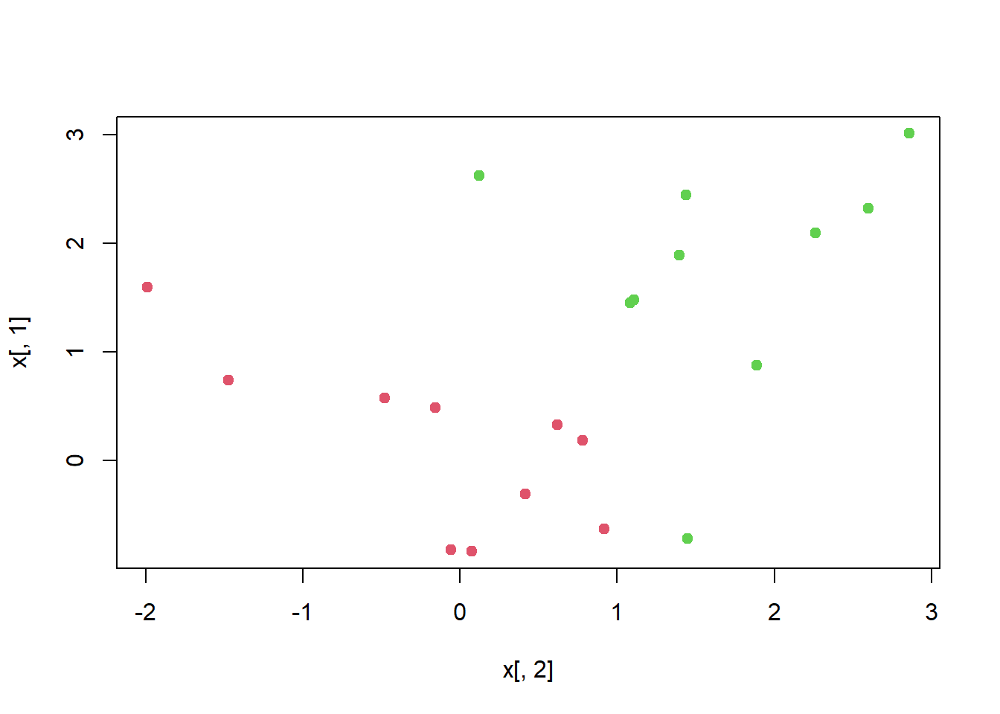
Ahora las observaciones son separables linealmente. Ajustamos el clasificador de vectores soporte y dibujamos el hiperplano resultante, usando un valor muy grande de cost para que ninguna observación se clasifique erróneamente.
dat <- data.frame(x = x, y = as.factor(y))
svmfit <- svm(y ~ .,
data = dat,
kernel = "linear",
cost = 1e5)
summary(svmfit)
Call:
svm(formula = y ~ ., data = dat, kernel = "linear", cost = 1e+05)
Parameters:
SVM-Type: C-classification
SVM-Kernel: linear
cost: 1e+05
Number of Support Vectors: 3
( 1 2 )
Number of Classes: 2
Levels:
-1 1plot(svmfit, dat)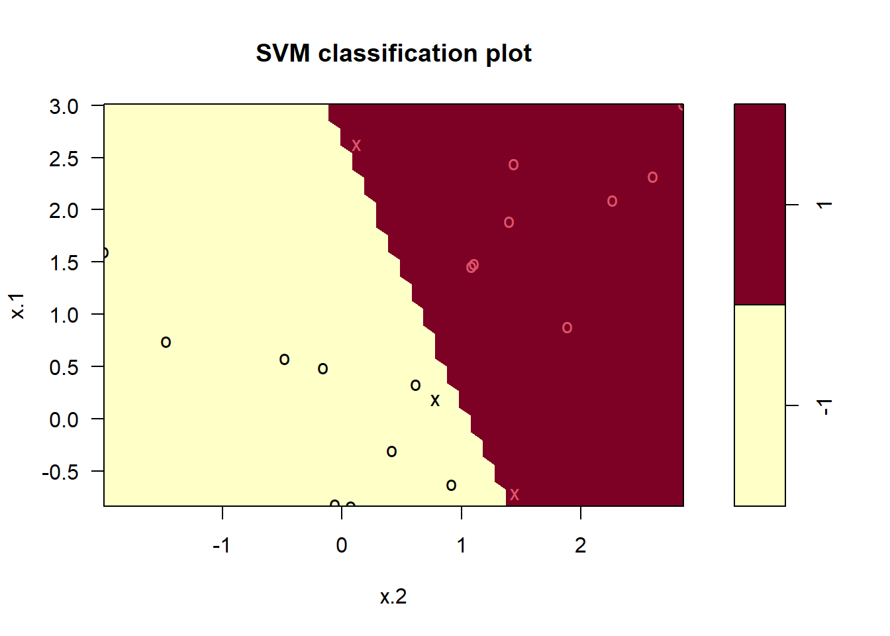
No se cometieron errores de entrenamiento y solo se utilizaron 3 vectores soporte. Sin embargo, podemos ver en la figura que el margen es muy estrecho (porque las observaciones que no son vectores soporte, indicadas como círculos, están muy cerca del límite de decisión). Parece probable que este modelo funcione mal en los datos de prueba. Ahora probamos un valor más pequeño de cost:
svmfit <- svm(y ~ .,
data = dat,
kernel = "linear",
cost = 1)
summary(svmfit)
Call:
svm(formula = y ~ ., data = dat, kernel = "linear", cost = 1)
Parameters:
SVM-Type: C-classification
SVM-Kernel: linear
cost: 1
Number of Support Vectors: 7
( 4 3 )
Number of Classes: 2
Levels:
-1 1plot(svmfit, dat)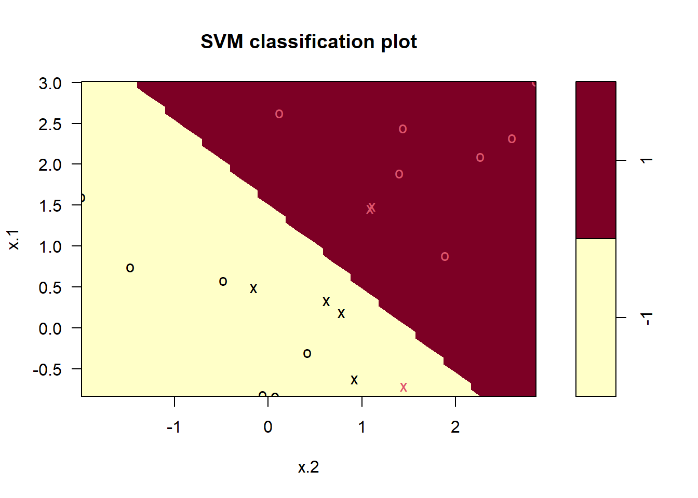
Usando cost = 1, clasificamos erróneamente una observación de entrenamiento, pero también obtenemos un margen mucho más amplio y hacemos uso de 7 vectores soporte. Parece probable que este modelo funcione mejor en los datos de prueba que el modelo con cost = 1e5.
Para adaptar una SVM usando un kernel no lineal, usamos una vez más la función svm(). Sin embargo, ahora usamos un valor diferente del parámetro kernel: "polinomial" o "radial". En el primer caso también usamos el argumento degree para especificar un grado para el kernel polinomial (esto es \(d\) en (9.22)), y en el último caso usamos gamma para especificar un valor de \(\gamma\) para el kernel de base radial (9.24).
Primero generamos algunos datos con un límite de clase no lineal, de la siguiente manera:
set.seed(1)
x <- matrix(rnorm(200 * 2), ncol = 2)
x[1:100,] <- x[1:100,] + 2
x[101:150,] <- x[101:150,] - 2
y <- c(rep(1, 150), rep(2, 50))
dat <- data.frame(x = x, y = as.factor(y))Dibujar los datos deja claro que el límite de clase es de hecho no lineal:
plot(x, col = y)
Los datos se dividen aleatoriamente en grupos de entrenamiento y prueba. Luego ajustamos los datos de entrenamiento usando la función svm() con un kernel radial y \(\gamma=1\):
train <- sample(200, 100)
svmfit <- svm(
y ~ .,
data = dat[train,],
kernel = "radial",
gamma = 1,
cost = 1
)
plot(svmfit, dat[train,])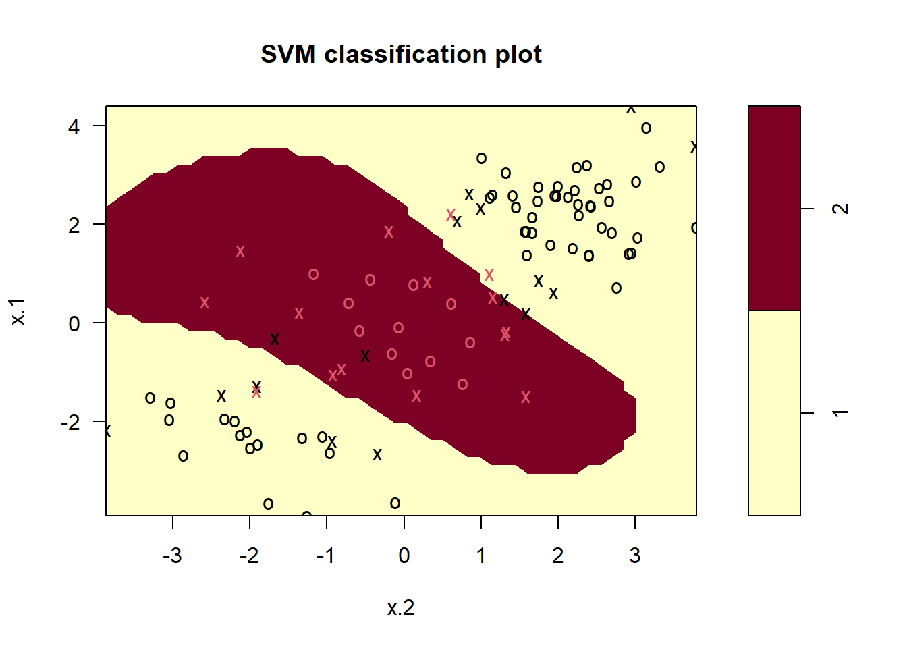
El gráfico muestra que la SVM resultante tiene un límite decididamente no lineal. La función summary() se puede utilizar para obtener información sobre el ajuste de SVM:
summary(svmfit)
Call:
svm(formula = y ~ ., data = dat[train, ], kernel = "radial", gamma = 1,
cost = 1)
Parameters:
SVM-Type: C-classification
SVM-Kernel: radial
cost: 1
Number of Support Vectors: 31
( 16 15 )
Number of Classes: 2
Levels:
1 2Podemos ver en la figura que hay una buena cantidad de errores de entrenamiento en este ajuste SVM. Si aumentamos el valor de cost, podemos reducir el número de errores de entrenamiento. Sin embargo, esto tiene el precio de un límite de decisión más irregular, que parece correr el riesgo de sobreajustar los datos.
svmfit <- svm(
y ~ .,
data = dat[train,],
kernel = "radial",
gamma = 1,
cost = 1e5
)
plot(svmfit, dat[train,])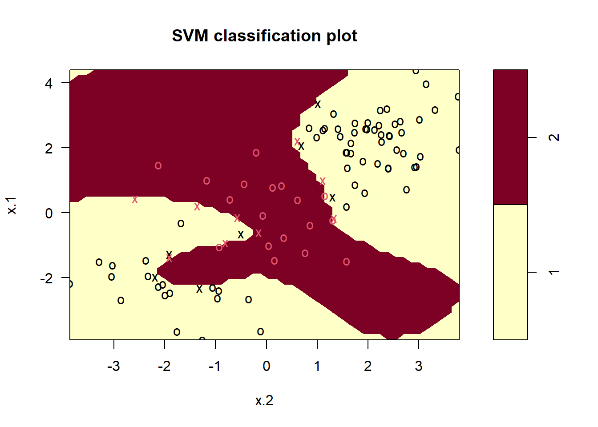
Podemos realizar una validación cruzada usando de nuevo tune(), para seleccionar la mejor opción de \(\gamma\) y cost para una SVM con kernel radial:
set.seed(1)
tune.out <-
tune(
svm,
y ~ .,
data = dat[train,],
kernel = "radial",
ranges = list(
cost = c(0.1, 1, 10, 100, 1000),
gamma = c(0.5, 1, 2, 3, 4)
)
)
summary(tune.out)
Parameter tuning of 'svm':
- sampling method: 10-fold cross validation
- best parameters:
cost gamma
1 0.5
- best performance: 0.07
- Detailed performance results:
cost gamma error dispersion
1 1e-01 0.5 0.26 0.15776213
2 1e+00 0.5 0.07 0.08232726
3 1e+01 0.5 0.07 0.08232726
4 1e+02 0.5 0.14 0.15055453
5 1e+03 0.5 0.11 0.07378648
6 1e-01 1.0 0.22 0.16193277
7 1e+00 1.0 0.07 0.08232726
8 1e+01 1.0 0.09 0.07378648
9 1e+02 1.0 0.12 0.12292726
10 1e+03 1.0 0.11 0.11005049
11 1e-01 2.0 0.27 0.15670212
12 1e+00 2.0 0.07 0.08232726
13 1e+01 2.0 0.11 0.07378648
14 1e+02 2.0 0.12 0.13165612
15 1e+03 2.0 0.16 0.13498971
16 1e-01 3.0 0.27 0.15670212
17 1e+00 3.0 0.07 0.08232726
18 1e+01 3.0 0.08 0.07888106
19 1e+02 3.0 0.13 0.14181365
20 1e+03 3.0 0.15 0.13540064
21 1e-01 4.0 0.27 0.15670212
22 1e+00 4.0 0.07 0.08232726
23 1e+01 4.0 0.09 0.07378648
24 1e+02 4.0 0.13 0.14181365
25 1e+03 4.0 0.15 0.13540064Por lo tanto, la mejor elección de parámetros implica cost = 1 y gamma = 0,5. Podemos ver las predicciones del conjunto de prueba para este modelo aplicando la función predict() a los datos. Tenga en cuenta que para hacer esto creamos un subconjunto del data.frame dat usando -train como un conjunto de índices.
table(true = dat[-train, "y"],
pred = predict(tune.out$best.model, newdata = dat[-train,])) pred
true 1 2
1 67 10
2 2 21El 12% de las observaciones de prueba están mal clasificadas por este SVM.
El paquete ROCR se puede utilizar para producir curvas ROC como las de las Figuras 9.10 y 9.11. Primero creamos una función (véase el anexo Herramientas) para dibujar una curva ROC dado un vector que contiene una puntuación numérica para cada observación, pred, y un vector que contiene la etiqueta de clase para cada observación, truth.
library(ROCR)
rocplot <- function(pred, truth, ...) {
predob <- prediction(pred, truth)
perf <- performance(predob, "tpr", "fpr")
plot(perf, ...)
}Las SVM y los clasificadores de vectores soporte generan etiquetas de clase para cada observación. Sin embargo, también es posible obtener valores ajustados para cada observación, que son las puntuaciones numéricas utilizadas para obtener las etiquetas de clase. Por ejemplo, en el caso de un clasificador de vectores soporte, el valor ajustado para una observación \(X= (X_1, X_2, \ldots, X_p)^T\) toma la forma \(\hat{\beta}_0 + \hat{\beta}_1 X_1 + \hat{\beta}_2 X_2 + \cdots + \hat{\beta}_p X_p\). Para una SVM con un kernel no lineal, la ecuación que produce el valor ajustado se da en (9.23). En esencia, el signo del valor ajustado determina en qué lado del límite de decisión se encuentra la observación. Por lo tanto, la relación entre el valor ajustado y la predicción de clase para una observación dada es simple: si el valor ajustado excede 0, la observación se asigna a una clase, y si es menor que 0, se asigna a la otra. Para obtener los valores ajustados para un modelo SVM dado, usamos decision.values = TRUE al ajustar svm(). Luego, la función predict() generará los valores ajustados.
svmfit.opt <- svm(
y ~ .,
data = dat[train, ],
kernel = "radial",
gamma = 2,
cost = 1,
decision.values = T
)
fitted <-
attributes(predict(svmfit.opt, dat[train, ],
decision.values = TRUE))$decision.valuesAhora podemos producir la curva ROC. Tenga en cuenta que usamos el negativo de los valores ajustados para que los valores negativos correspondan a la clase 1 y los valores positivos a la clase 2.
SVM parece estar produciendo predicciones precisas. Al aumentar \(\gamma\) podemos producir un ajuste más flexible y generar mejoras en la precisión.
rocplot(-fitted, dat[train, "y"], main = "Training Data")
svmfit.flex <- svm(
y ~ .,
data = dat[train,],
kernel = "radial",
gamma = 50,
cost = 1,
decision.values = T
)
fitted <- attributes(predict(svmfit.flex, dat[train,],
decision.values = T))$decision.values
rocplot(-fitted, dat[train, "y"], add = T, col = "red")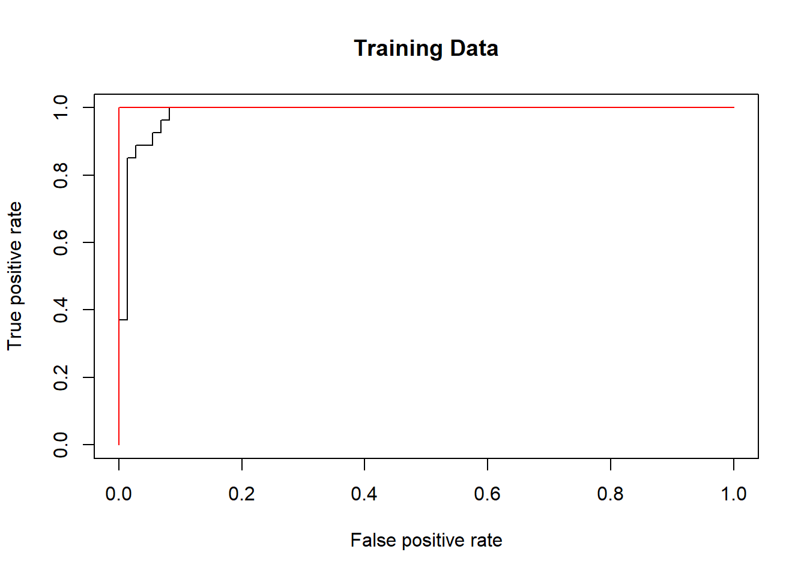
Sin embargo, estas curvas ROC son de los datos de entrenamiento. Estamos realmente más interesados en el nivel de precisión de la predicción en los datos de prueba. Cuando calculamos las curvas ROC en los datos de prueba, el modelo con \(\gamma=2\) parece proporcionar los resultados más precisos.
fitted <- attributes(predict(svmfit.opt, dat[-train,],
decision.values = T))$decision.values
rocplot(-fitted, dat[-train, "y"], main = "Test Data")
fitted <- attributes(predict(svmfit.flex, dat[-train,],
decision.values = T))$decision.values
rocplot(-fitted, dat[-train, "y"], add = T, col = "red")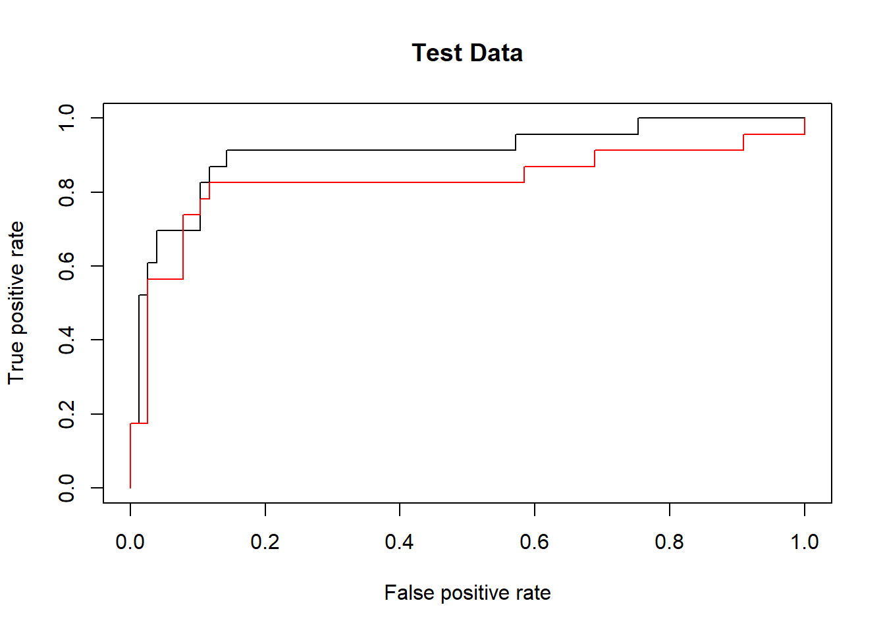
Si la respuesta es un factor que contiene más de dos niveles, entonces la función svm() realizará una clasificación multiclase utilizando el enfoque de uno contra uno. Exploramos ese escenario aquí generando una tercera clase de observaciones.
set.seed(1)
x <- rbind(x, matrix(rnorm(50 * 2), ncol = 2))
y <- c(y, rep(0, 50))
x[y == 0, 2] <- x[y == 0, 2] + 2
dat <- data.frame(x = x, y = as.factor(y))
par(mfrow = c(1, 1))
plot(x, col = (y + 1))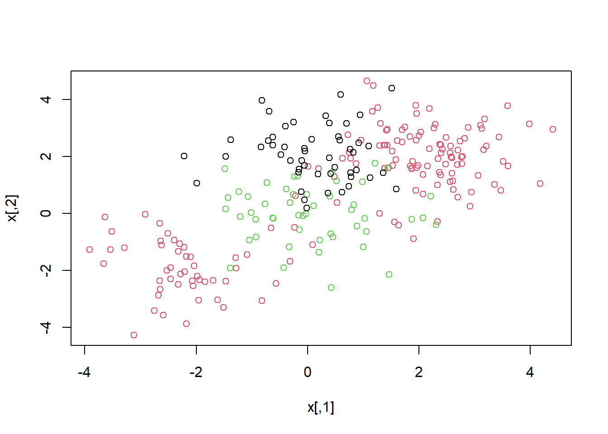
Ahora ajustamos una SVM a los datos:
svmfit <- svm(
y ~ .,
data = dat,
kernel = "radial",
cost = 10,
gamma = 1
)
plot(svmfit, dat)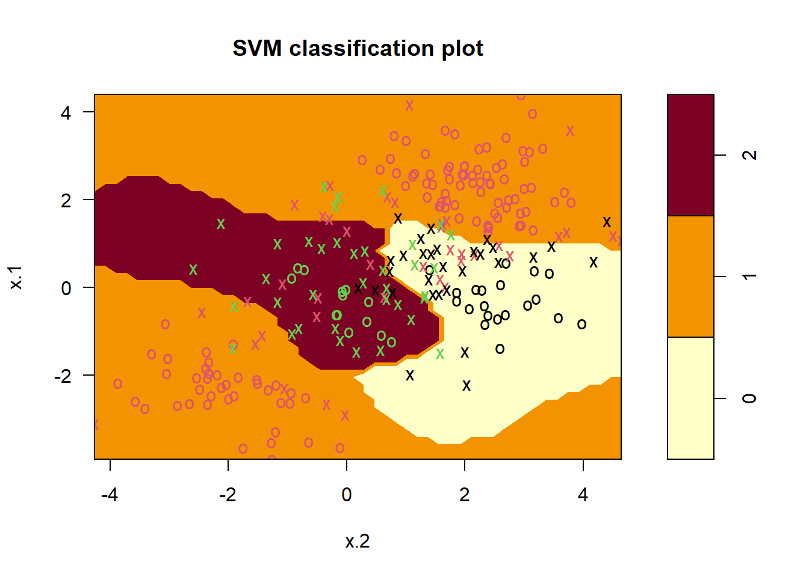
El paquete e1071 también se puede usar para realizar una regresión de vectores soporte, si el vector de respuesta que se pasa a svm() es numérico en lugar de un factor.
Nota Víctor: La aplicación descrita en este apartado en el material original es un claro ejemplo de material muy específico, que requiere de ayuda de expertos en el tema (expresión génica) para entender la problemática, el contexto de los datos. Por ello se omite aquí y, de nuevo, se pueden consultar los detalles en el material original.
Sólo añadir aquí que, al mirar las dimensiones del conjunto de datos (
Khan) se encuentra que tiene 63 observaciones de entrenamiento y 20 de prueba, y 2308 variables (mediciones de la expresión génica, es decir mediciones de 2308 genes! Muchos más que observaciones!)